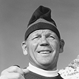
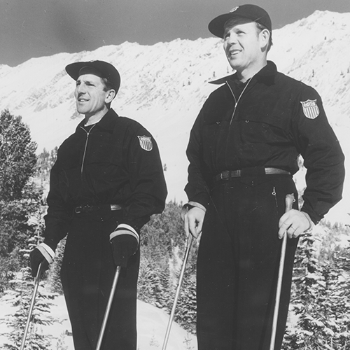
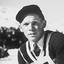
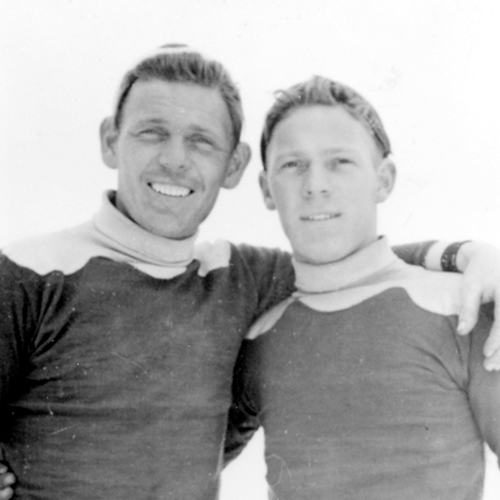
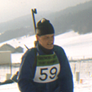
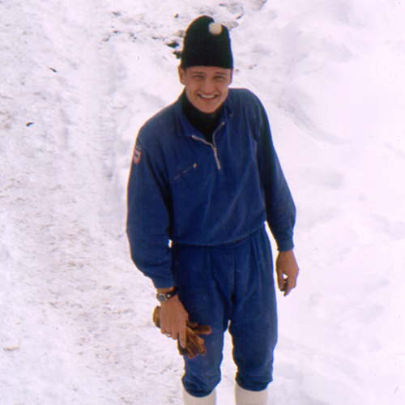
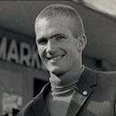
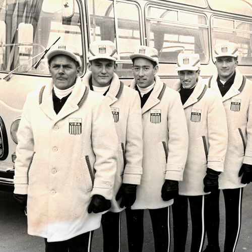
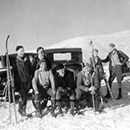
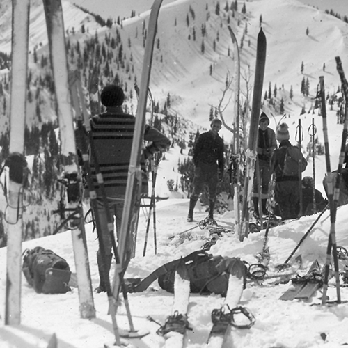

Junior Bounous won the National Cross-Country Championship in 1947, but is most remembered as an inspired ski instructor and founding member of the Professional Ski Instructors of America (PSIA). Bounous's contributions to the profession as an instructor and writer of articles and books earned him a place in the National Ski Hall of Fame in 1996.


Alf Engen
Known for his expertise in ski jumping and alpine skiing technique, Alf Engen also excelled in cross-country skiing. Alf found that there was no better way to keep the body in good physical and mental shape than to cross-country ski in Alta's Albion Basin. Alf was almost always at the top of the field in national and international cross-country and Nordic combined competitions. Alf Engen was a true Nordic skiing competitor, enjoying all disciplines of the sport.


Corey Engen
Corey Engen, at age 17, emigrated from Norway to Salt Lake City, and joined his brothers Alf and Sverre. Corey excelled in cross-country and other skiing disciplines, winning more than 500 medals and trophies throughout his career. Later, he served as Captain of the 1948 U.S. Olympic Nordic Team. He continued to amaze fans by winning a multitude of awards as a senior racer. Corey was inducted into the National Ski Hall of Fame in 1973, completing the Engen brothers trio of skiing success.


Ralph Wakley
Ralph Wakely, is a native of Logan, Utah. He was a member of the United States Biathlon Ski Team for three years from 1966 to 1968 and represented the United States in the biathlon in the 1968 Olympic Winter Games in Grenoble, France. He finished as the top American in the 20K individual biathlon race. At the University of Utah, Ralph was an All-American cross-country skier and was awarded the prestigious Alf Engen Sportsmanship awared in 1969. Ralph was also a member of the United States National cross-country team in 1970 and 1971.


Bill Spencer
Bill Spencer was not only a great competitor in the world of cross-country skiing, he also spearheaded the development and evolution of the sport known as Biathlon. Bill was named "All-American" in Nordic skiing in the late 1950s. As an expert marksman and competitive Nordic skier, he joined the U.S. Olympic Biathlon Teams in 1964 and 1968, and won many championships. Bill eventually became Team Leader and Shooting Coach of several U.S. Olympic Winter Biathlon teams.


Charles Stoney
Charles T. Stoney founded the Wasatch Mountain Club with his two sons and a few hiking buddies in 1912. Using homemade wooden skis and a single bamboo pole for support and speed control, the club members became the first organized group of skiers to venture into the winter mountains. Even today, Wasatch Mountain Club members follow the original cross-country skiing routes pioneered by Charles Stoney.